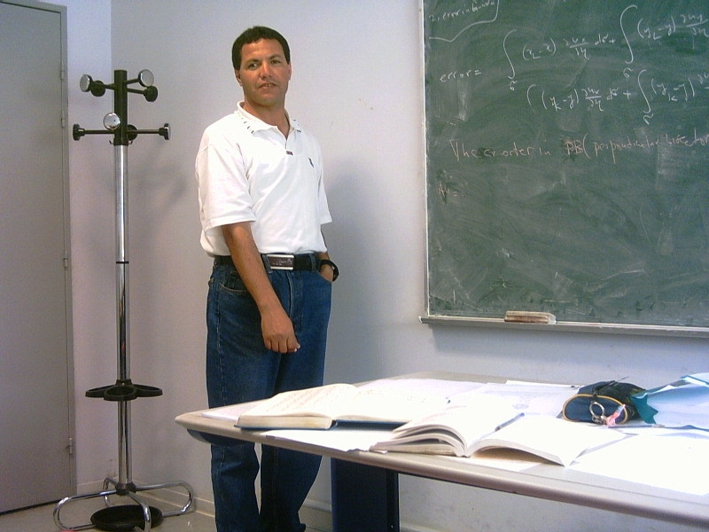

Home Page of Bradji, AbdallahFull
Professor at Annaba-University, Visiting
Professor in USPN-France,
and French HDR
|
- Professeur Invité, August 20th--September 18th, 2026, to Sorbonne Paris Nord University-France (in MCS team of LAGA)
- Professeur Invité, September 12th--October 11th, 2024, to Sorbonne Paris Nord University-France in the framework of EUR Visiting Professor
- Special Issue in Numerical Methods for Non-Newtonian Fluids
- Professeur Invité, October 12th-2023--November 10th-2023 in LAGA of University of Paris 13-France
- Associated member to I2M Laboratory of Aix-Marseille University-France. The members of I2M
- Professeur Invité, September 7th-2022--September 27th-2022 in LAGA of University of Paris 13-France
- Professeur Invité, in the period October 16th--November 15th of 2021 in LAGA of University of Paris 13-France
- The online workshop FUHRI2021 on the occasion of Dr. Jürgen Fuhrmann's 60th birthday, April 29--30, 2021
- Planed to be Guest in WIAS in 2022/2023.
- Prof. Invité by LAGA (Laboratoire d'Analyse, Géométrie, et Applications)-Paris 13, Team MCS in the periods:
- June 2nd--June 16th, 2019.
- March 23rd--April 8th, 2018.
- November 12th--November 26th, 2017.
- Associated member in CSEHS of Mohammed VI Polytechnic University in Morocco
- My teaching
- Scheduled teaching for the first semester of 2026--2027
- Useful links on teaching of:
- Numerical Analysis, Programing, and Modeling-(Some famous books are available) Courses of J. Fuhrmann
- Modeling-Slides of B. Andreianov
- Advanced Calculus (Almost the program of Second year graduation)-Series Schaum
- Complex Variables-Series Schaum
- A book for all
- Undergraduation
- Graduation, Postgraduation, and Supervision
- Link to my home page in the university of Annaba
- Sites on Conferences:
- SMAI Conferences. This site is highly recommended.
- ARW (Academic World Research): This site is recommended.
- ECCOMAS: This site is recommended.
- CONAL: Conference Alerts
- COMS: Conferences Management Systems
- All Conferences Alert
- Some Interesting Conferences and Special Issues for the year 2026--2027:
- ICNAAM 2027 (International Conference on Numerical Analysis and Applied Mathematics)
- Session Proposals: July 15th, 2027
- Place: Kipriotis Village · Island of Kos-Greece (Virtual) participation is allowed.
- Date: September 14--19, 2027
- Normal Registration Deadline (All fees must be paid by the deadline): July 1st, 2027
- Late Registration Deadline: August 8th, 2027
- Deadline of Extended Abstract Submission (4-5 Pages which will be published in Springer Proceedings in Mathematics and Stochastics): August 6th, 2027
- Notification of Acceptance: August 15th, 2027
- Submission of the source files of camera ready extended abstracts to publisher: October 31st, 2027
- Submission of extended papers to Journals: September 30th 2027--January 31st 2028
- First UK Conference on Inverse Problems
- Place: Leeds-UK
- Date: March 22--23, 2027
- Abstract submission: Is open now
- Paper Submission (10 Pages): December 15th, 2026
- Notification of Acceptance of Papers: January 15th, 2027
- 14th IFAC Conference on Fractional Differentiation and its Applications 2027
- Place: Delfts, Netherlands
- Dates: August 23--26, 2027.
- Deadline of the submission of papers: November 30th, 2026.
- Notification of acceptance of full papers: February 15th 2027
